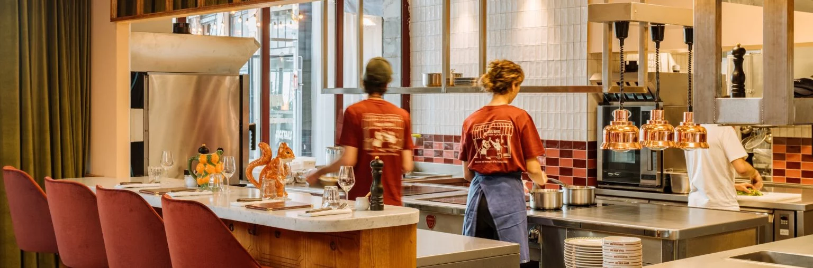

La joyeuse brigade de la Brasserie de Paudex pose ses valises au bord du lac Léman, à Paudex. C'est dans cette adresse emblématique que Fabrice Hochart, après 5 ans à l'Auberge de l'Union à Palézieux, aiguise ses couteaux pour vous proposer une cuisine de brasserie franche, généreuse et un peu canaille — pâté en croûte maison, filets de perche du lac, viandes locales — le tout accompagné des meilleurs vins de Lavaux.
Déjeuner : 11h30 - 14h30
Dîner : 18h00 - 22h30
Fermé le lundi
On garde votre table au chaud 15 min maximum.
De Palézieux à Paudex, une nouvelle histoire
Après 5 ans à faire vibrer l'Auberge de l'Union à Palézieux-Gare, nous avons eu le privilège de reprendre la Brasserie de Paudex, cette adresse emblématique du bord du lac Léman entre Lutry et Pully.
À seulement 10 minutes de Lausanne, notre nouvelle maison perpétue la même passion : une cuisine de brasserie franche, généreuse et un peu canaille, qui raconte l'histoire de notre terroir vaudois. Entre tradition suisse et créativité culinaire, nous transformons les meilleurs ingrédients de nos producteurs régionaux en moments de partage authentiques.
Ici, pas de chichis. Du fait maison, des producteurs locaux qu'on connaît par leur prénom, et cette joie simple de bien manger ensemble — que vous soyez du coin ou de passage.
— Fabrice Hochart, Chef
NOS VALEURS
Une cuisine de brasserie franche, généreuse et un peu canaille — c'est notre ADN. Ici, on croit à un modèle de restauration plus juste, plus humain, et plus durable. Ce n'est pas une fin en soi ni une médaille pour frimer, on le voit au contraire comme un point de départ, un engagement qu'on prend pour continuer jour après jour à s'améliorer.
LE LIEU
Nichée à Paudex, entre Lutry et Pully, la Brasserie de Paudex bénéficie d'un cadre exceptionnel au bord du lac Léman, à deux pas des vignobles en terrasse de Lavaux classés au patrimoine mondial de l'UNESCO. À seulement 10 minutes de Lausanne et 15 minutes de Vevey, notre maison mêle l'esprit des brasseries parisiennes — fresques murales dessinées à la main, chaises bistrot Thonet, banquettes de cuir — à la chaleur lémanique qui fait notre âme.
Nos Vins & Producteurs
À la Brasserie de Paudex, nous travaillons en direct avec les vignerons et producteurs de la région. Transparence et qualité sont nos maîtres-mots.
Vignerons de Lavaux
- Domaine Croix Duplex — Epesses
- Cave Luc Massy — Villette
- Domaine Antoine Bovard — Cully
- Cave des Viticulteurs de Bonvillars — Bonvillars
- Domaine Louis Bovard — Lutry
Producteurs Locaux
Viandes & Charcuterie
- Boucherie Mövenpick — Lausanne
- Salaisons d'Yvorne — Yvorne
Légumes & Maraîchage
- Jardin des Monts — Palézieux
- Maraîchage du Jorat — Jorat
Boulangerie
- Amandine Boulangerie — Pain artisanal
Fromages
- Fromagerie de Gruyères — Gruyères
- Laiterie de Moudon — Moudon
Poissons
- Pêcheurs du lac Léman
Ce qu'ils en disent
"Comme d’habitude, sympa, agréable, gourmand, bref toujours un plaisir de venir y manger. Aujourd’hui nous avons mangé le bœuf bourguignon, un régal. Une explosion de saveur, tout les goûts s’harmonisent avec justesse. Le service était impeccable et efficace, quand au patron il est toujours fidèle à lui même, plein de bonne humeur et d’humour, sincèrement, si vous ne connaissez pas allez y."
"Une serveuse accueillante souriante et à l'écoute des besoins (notamment pour un petit de 3 ans). Quant à la cuisine une belle surprise avec des produits frais, délicieusement apprêtés et une glace à la réglisse qui a couronné le tout :-) une jolie découverte, on retournera !!"
"Une adresse que l'on recommande, tant pour l'accueil que l'authenticité des plats proposés et cuisinés avec soin. Un patron haut en couleurs qui imprime une patte chaleureuse que l'équipe de service transmet sans chichis! Allez-y les yeux fermés si vous appréciez la bonne cuisine du terroir."
Nous Trouver
Brasserie de Paudex
Rte du Simplon 7, 1094 Paudex
En voiture — Depuis Lausanne : 10 min · Depuis Vevey : 15 min · Parking disponible
Transports publics — Bus depuis Lausanne, arrêt à 2 min à pied
À vélo — Piste cyclable du lac · Parking vélos · PubliBike à proximité